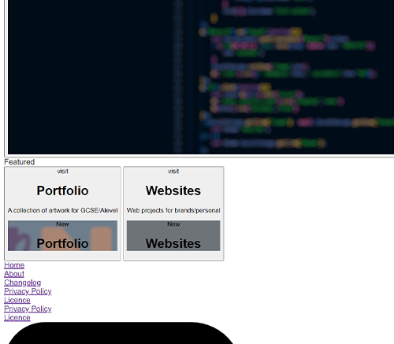
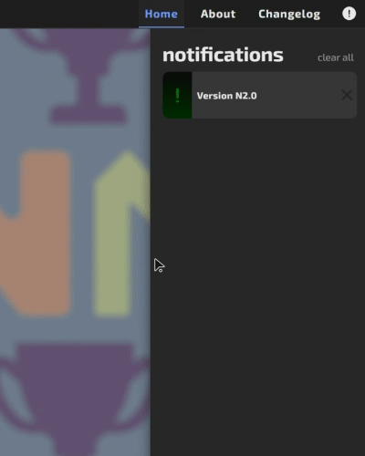
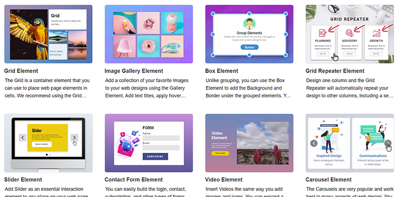
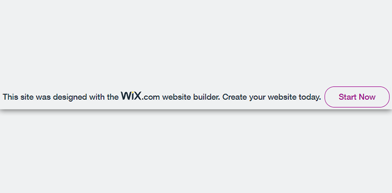

00 Introduction
intro
01 What is HTML, CSS and Javascript
In this chapter I will be going into the history and the basics of HTML, CSS and Javascript code as these are crucial elements to understanding the difference in complexity and customization that a website coded by hand can have over a website builder.
Websites are composed of many different languages in order to style, structure and run different features both client side and server side. The languages used can be split into two main categories which consist of the ‘frontend’ and ‘backend’ where the frontend is the design and functionality of the client side layout, whereas the backend is the server processing and database of the website.
The frontend consists of 3 main languages: HTML, CSS and Javascript. These all contribute to the creation of the visual and client side processing of the website.
The central connective language for frontend development is HTML; which stands for Hypertext Markup Language. 'HTML 1.0 was first written in 1993 by Tim Berners-Lee'[?], which has since been expanded upon until HTML 4.01 became the official standard in December 1999 at which point version 4.01 became the most widely used version of the architecture at the time. 'XHTML 1.0 (Extensible Hypertext Markup Language)'[?] was written shortly after HTML 4.01 in 2000, and was designed to combine both the power of XML and the current strength of HTML 4, this was a stricter but ultimately the same version of HTML, however it was the only way to have both HTML and XML. the requirement of XHTML if developers wanted both HTML and XML was removed in 2015 when HTML 5 was released, HTML 5 was designed solely in order to be able to replace all previous versions of HTML and XHTML in order to make all the needed features of both available while adding major improvements for both, such as more elements and optimisation to video and audio capability. HTML 5 is now considered an official web standard by the World Wide Web Consortium (W3C) who now maintain and continue developing HTML to add more functionality to the language.
HTML is not considered a programming language due to its inability to create dynamic functionality. ‘But why do we need HTML?’ Although HTML isn't a programming language, HTML is needed for structuring page content, inserting links to other pages or websites and connecting other languages together through itself, thus it is just as needed as Javascript or CSS. Each page of a website, whether it's a home page, about page or contact page, still requires a separate HTML document for each.
All HTML pages will contain a series of elements through the culmination of tags and attributes within. Elements are what structures a webpage through placement of tags and attributes that assign meaning to each tag. Tags tell the browser where an element will begin and end but an attribute will describe the characteristics of the element. Tags are structured with an opening tag, content and closing tag, for example a paragraph would be shown as:
<p>
This is text inside of a paragraph
</p>
Every element follows this layout in the format of:
This is text inside of a paragraph
</p>
<[tag name]>
[element content]
</[tag name]>
The closing tag in html always has a forward slash after the opening bracket in order to tell the browser that this is where an element ends. This is important because in HTML you can have multiple elements embedded inside of a single element, meaning that without the ending tag the browser could misinterpret the embedded element as a closing tag and drastically change the elements function. This rule has a few exceptions however as some elements only have an opening tag such as image tags, meta tags and line break tags.
[element content]
</[tag name]>
<[name of single tag element]>
Single tag elements exist as they cannot contain content or tags within themselves which makes the closing tag redundant when used, However both tag types use attributes. Attributes are vital to tags which add more information and detail. Attributes are formatted in tags as:
<[tag name] [attribute name]=”[attribute value]”>
[content of element]
</[tag name]>
Attributes can give links to images through ‘src’, links to other pages through ‘href’ and group attributing through ‘class’.[content of element]
</[tag name]>
Class is one of the most important attributes as it can be used to assign styling from CSS to every element that has the same class attribute, which prevents repeatedly writing the same CSS for every element that needs the styling.
All HTML documents contain a similar base layout which consists of a starting tag which tells the browser to render the page as a HTML document and then a html tag which contains a head and body tag.
The header tag is used to contain unseen content such as: page title, search engine optimization and links to CSS files. While the body tag is used to contain all of the visible page content.
<!DOCTYPE html>
<html>
<head></head>
<body></body>
</html>
HTML is limited in what it can do as it is primarily static and requires the help of Javascript in order to give it dynamic functionality. It also requires a new HTML document for every page meaning that even if all of the elements are the same, it will need a new document to change page, which can be taxing to create.<html>
<head></head>
<body></body>
</html>
The second language that is used in frontend development is CSS and stands for cascading style sheets and is used solely for styling elements inside of a HTML document. CSS was developed by the aforementioned W3C in 1996 due to html not being a fit language to have tags that format the page as this type of tag required web developers to have to rewrite each HTML document every time a new styling tag was introduced throughout each HTML version. CSS isn't a requirement for websites unlike javascript and HTML but without the use of CSS, websites would look plain and empty due to the lack of positioning and colour. The idea for CSS was first brought up by Håkon Wium Lie on the 10th of October 1994 'during his time working with Tim Berners-Lee at CERN'[?] but the first version was only released in 1996 'but then enhanced upon in CSS 2 from 1998'[?]. The advantages of CSS become very noticeable from both a developers and users point of view when comparing websites with and without, as if you take this website without CSS:
 You might have seen a website display itself like this when it fails to load completely, and thus had to reload the page due to a lack of cohesion in the tall list of links, buttons and images all consisting of only blue and black text. All websites would have this same list-like layout and sizing if not for the use of CSS attached to the main HTML document. CSS has a much higher efficiency than the styling used in HTML 3.1 as assigning an element in HTML to a class allows for CSS to style every element of the given class without having to rewrite the code for every element you want to style which only requires one declaration statement. Unlike HTML, CSS lays out its code by containing the style for an element in a pair of curly brackets which is placed after the element you want to style such as:
p{ Background-color: red; }
By using ‘p’ it tells the CSS code to style every paragraph element in the HTML document with a background colour of red. However if you wanted to style a certain class rather than every element of a specific tag then you would want to have the class name rather than the tag of an element placed before the curly brackets with a period placed in front.
.className{ Background-color: red; }
Now, rather than styling all the elements of a specific tag; only the class called ‘className’ will have a background colour of red. The same goes for if you want to style an element with a certain ID name, all you would need to do is place the id name of the element before the curly brackets with an octothorp placed in front:
#idName{ Background-color: red; }
With the ability to style all elements of a certain tag, class and id all through css it allowed for the CSS code itself to be kept in a separate file rather than having to be stored in the HTML ‘style’ tag. This meant that not only would you not have to write the same styling code for every element you want it to apply to; but also that you wouldn't need to rewrite all of the code for every HTML document you wanted it to apply to as it could now easily be linked into the page using a ‘link’ tag:
<link rel="stylesheet" type="text/css" href="[file name]"/>
Through the advent of being able to have one CSS file to style every page of a website, the use of CSS has become more of a requirement than an optional addon to HTML.
Although even with the advent of a single css file, many types are still used to fit a certain purpose of a website. These types of CSS are called External, Internal and Inline.CSS used as an internal style is loaded each and every time the website is refreshed or reloaded and can also only be used for the HTML document that this CSS code is written on, This is due to this specific CSS code being contained inside of a HTML documents ‘style’ tag rather than externally contained in a separate CSS file. Internal CSS has a benefit when developing a site compared to an external file due to having all of the styling and HTML code on one page makes it easier to view and share previews for the page being developed.
Secondly, CSS used as an external style is usually considered the most convenient as it uses the aforementioned separate CSS file, meaning it can be used on every page without having to rewrite the code for every page, which can increase the speed of styling and adding new pages to a website. This method also has the advantage of possibly improving the load times for a website as rather than having to read a new stylesheet inside of each HTML file, it can instead read the external CSS file being kept in the ‘browsers cache’ (small storage containing data from previously visited websites in order to load them faster) which allows for much faster loading of the CSS.
Finally, inline CSS is used for styling single elements in HTML documents through using the style attribute inside of an element and is laid out in the form:
<[tag name] style=”background-color: red;”>
[content of element]
</[tag name]>
This method of CSS is not generally considered to be the most efficient method, however can be useful to change styles of a single element quickly for preview purposes when creating a website.[content of element]
</[tag name]>
The third and final language that is used in frontend development is Javascript, Brendan Eich invented Javascript in 1995 for use in the Netscape 2 web browser 'before becoming the ECMA-262 standard in 1997'[?]. Javascript was later handed over to ECMA by Netscape and now continues to be developed by the Mozilla foundation who are best known for their Firefox browser.
Javascript is a high level language used in websites due to its ability to allow dynamic interactions inside of a webpage that HTML and CSS cannot offer by themselves. Javascript can edit styles and add actions based on user inputs onto the site.
Similarly to CSS, Javascript can be stored either on the page in a ‘script’ tag, or in a separate JS file linked to the page:
<script src="[file location]"></script>
Unlike with HTML and CSS, Javascript has many libraries developed for it in order to add new functionality that base javascript does not include. These additions allow previously long lines of code to be simplified for example:
document.querySelectorAll(‘div’);
from base Javascript can be turned into:
$('div')
In the JQuery library.The interactivity that this code can supply makes a static website using only HTML and CSS into a more fleshed out experience for the user by adding functions such as: onClick(), onLoad() and onChange(). These are used to call functions when one of these conditions are met within the page. These can be laid out in two ways, in the javascript file itself:
variable.addEventListener(‘click’ function(){
[output code]
});
Or within the HTML document as an attribute:
[output code]
});
<[tag name] onClick=’function(){
[output code]
}’></[tag name]>

Both examples show javascript ‘events’ that allow for specific tasks such as dropdown menus, button functionality and for starting different CSS animations.
Frontend javascript can also be used for hidden uses to improve a websites functionality such as loading images when needed, adding cookies to a page so the user can stay logged in and for preloading certain elements to improve website speed between pages.[output code]
}’></[tag name]>
Javascript is good at these operations due to its speed and simplicity as Javascript executes its code inside the browser rather than connecting to a server or needing a compiler for it to run. Due to these benefits, Javascript is incredibly popular and therefore has a lot of user created libraries and tutorials for beginners wanting to get into the language.
However even with all these benefits of Javascript, the language still has some issues as each browser can interpret the code differently meaning that some features that work on one browser may not act the same on a different browser, which ends up requiring a developer to test the code on all of the major browsers before being able to upload the code for the website.
It is important when coding in Javascript that the variables are assigned before the code itself is referenced due to the language processing the code from the top down. This means that if a function is referenced before the variable is assigned in the code, then the variable in the function will be read as ‘undefined’ which prevents the rest of the code from being executed.
02 What is a website builder
This chapter will focus on what website builders are and how they use user interfaces to negate the requirement for coding when creating websites, which introduces an easier environment for people wanting to create websites without prior coding knowledge.
Building websites used to be a challenging and time consuming task for most, due to them requiring a lot of experience and learning in order to have a decent final product, however through the use of website builders this challenging and time consuming activity can be reduced into simple design rather than having to dig into the technicalities and the coding that used to be required. Through the website builders ease of access to creation through using preset pages and drag and drop functionality to add pages, features and other content, it makes all the time needed to learn all of the previously mentioned code turn into time that can be spent focusing more on the desired layout and content of the website.
One of the first features that are included in most website builders are drag and drop elements (being one of the major features), is the most used by website builders as they allow for content in the website editor to be positioned according to the users desired design but also by allowing content from outside of the browser to be dragged directly into the page such as images and files, which allowed for the files to be directly uploaded into the website builder rather than having to navigate a series of menus and code image inputs in order to display them on the website. This drag and drop functionality became possible for website builders and other websites on the '25th of January in 2010 when chrome released its new major version CHROME 4.0'[?].
This feature then became more widely used and implemented into other browsers in later 'versions such as Microsoft Edge 9.0 and Safari 6.0'[?].
Secondly, website builders take the issue of storing and hosting websites into their own hands by removing the need for the user to have to build a database or web server in order to be able to run the site on the internet. This is especially useful as most users looking to create a website won't have the experience to program the security required to protect their website, nor have a computer that can run 24/7 to act as a server. Website builders handling the servers for any websites made with their service also mean that users don't have to undergo getting a secure SSL certificate. SSL certificates both encrypt the data travelling from the server to the user, and also 'allow the browser and users to know that this is a trusted and safe website'[?].
Having an SSL certificate can also boost its ranking when displayed by a search engine like google as 'it is seen as a sign of security which allows it to be boosted higher up in search rankings'[?]. This is just one way that website builders automatically employ SEO, which stands for ‘search engine optimization’. SEO is the process of improving a websites ‘online ranking’ which simply just means how high google will place it compared to other websites that fit a search criteria put in by a user, for example googling ‘youtube’ will present ‘youtube.com’ as the first search result as not only does it fit the search criteria, but it also has a high SEO ranking in comparison to other video sharing sites.
Website builders also accommodate for different page sizes through the responsive drag and drop elements that are automatically resized for any displays. This is incredibly useful for website builders as it means that the user only has to create a design for the landscape view of the website, and the website builder would automatically change sizes and order of items in order for it to be formatted correctly while in a portrait mobile view. This feature saves time and allows for more time on a single design rather than having to come up with designs for every screen size. This is crucial if a website is not designed with a mobile layout in mind then it can sometimes be unusable on mobile devices due to warped layouts and off-screen buttons.
Thirdly, website builders also include easy compatibility between themselves and third party applications. This makes embedding content like youtube videos, spotify songs and google drive links considerably easier as website builders usually have predetermined settings for each type of embed that are set to improve the user experience for any device it's viewed on.
Embedded layers like the one shown above allow for websites to display their content and information into other websites through the use of an ‘iframe’ tag which mimics a website being opened. This allows for the aforementioned videos and songs to be played without having to leave the space of the current website being visited.
Lastly, and most importantly. Website builders automatically optimise their websites to give the best performance to any device that it is opened on. This is incredibly beneficial for the user as any images uploaded will automatically be scaled and converted to different formats to improve the speed and load time of the page. This doesn't stop at images though as favicons (icons displayed next to the page name) and any javascript is usually shortened and optimised when a website is published. The javascript is shortened and compressed because:
if([condition]) {
[if code]
} else {
[else code]
}
Is easier to read, but takes a lot longer to convert into machine code by the browser when the page is opened in comparison to this same code in a compressed format:
[if code]
} else {
[else code]
}
[condition] ? [if code] : [else code]
Overall website builders contain many features that are necessities in order for them to perform as well as websites created by website developers and through these features they become extremely convenient in terms of user experience and traffic to the website.
03 Humans vs Machines
For both website builders and human website developers, there are a series of benefits and drawbacks to choosing either. In this chapter I will overview the differences between both and what makes one better than the other in certain aspects but worse in other aspects.
So why would you choose a website developer over a simple website builder if website builders don't require any deep understanding of code?
This, although a very good point, isn't quite as simple as it seems as just because website builders can quickly make websites without the need for any coding experience, it's also completely limited to the tools and presets that come with the service that restrict the amount that could be achieved within a website. This means that for any design that would require specialist functionality such as: transitions between pages, 3D scenes, and any other unique visual effects, unfortunately wouldn't be able to be achieved by a website builder as per its limited capabilities. Therefore for designs too complicated to be accomplished by these means, it's more advised to hire a freelance website developer as any designs can be achieved as the restrictions that weigh down on website builders become redundant when using a code editor. Regrettably, this isn't the only issue that website builders face when put against freelance website developers as website builders also give off a lacklustre feeling to any page made with a website builder. This is caused by the lack of differentiation from any other website made with the same builder due to how all website builders use template systems in order to keep the websites responsive for all devices. Sadly, this lack of differentiation can make the page seem boring to users that have seen similar versions made from the same website builder, thus lowering the user retention rate of your website.
 This screenshot from the website builder 'Nicepage'[?] shows the limited amount of tools that will be used in most websites made using Nicepage, from this we can see that although every website created will be ‘unique’, they will still all be limited to the same template elements. Additionally to the lack of uniqueness between websites made with the same templates. This however, becomes an even greater issue as competing website builders will have to implement the same templates in order to prevent them from falling behind in terms of features in contrast to other website builders, but this causes even the competing websites builders to have very similar looking sites when placed side by side as they all share the same popular templates. Most website builders will also include a banner displayed either on the top or the bottom of the website indicating that this specific site was made with a website builder.
 This image is from a ‘Wix site’[?] that shows an advertisement banner that Wix displays on most of their websites that users have created. This is used in order to advertise their services to any users visiting a site created with them. For most people this watermark left behind won't be an issue as they just want an online space to display their work for others to view however, websites used for business purposes can seem unprofessional due to the watermark that gives it a sense of cheapness and disregard for the brands online image. This can lead to further distrust into the product quality from a business and can cause a reduction in sales and reputation.
Even though website builders have a large amount of drawbacks in contrast to what Freelance website developers can achieve, this doesn’t necessarily mean that website builders are completely inferior to website developers. This is most evident when it comes to management of the websites and pricing to keep the services running for an extended period of time as the cost of a website builder is only around ‘11 to 21 pounds a month’[?] as shown on the wix website whereas a website developer can cost an average of around 75 pounds an hour, and an amount of around 6,760 pounds in total. This large sum, although it will usually be enough to produce a full website, does not typically include server costs nor additional features later down the line. Due to the website builders having a simple monthly cost that includes: databases, payment handling, additional features as they are added, and server processing, it makes the pricing for website builders significantly more cost effective compared to server processing and hosting for a website made without a website builder that aren't included with the price of hiring a freelance website developer as on Amazon Web Services (AWS) server processing costs from ‘200 to 800 pounds a month’[?]. This shows that by building a website with a website builder, you can save a significant amount of money both upfront and monthly, making this the better option for a small project or startup in comparison to hiring a website developer. Using a website builder can also notably reduce the time it takes to have your website built as the coding process for a website is a long and time consuming process compared to using the drag and drop presets that the website builder provides.
Overall both website builders and freelance website developers have both pros and cons, whether it's related to cost, available features or user perception. Due to these factors, there is no definitive right answer for what you should use to make your website, as both can be applicable for different circumstances that a website might need to fill. From online stores to portfolios to display a persons’ work.
04 How do website builders affect us
WIP
05 WIP what is this useful for
WIP
06 Conclusion
WIP
- Chapters
Introduction Chapter 1 Chapter 2 Chapter 3 Chapter 4 Chapter 5 Conclusion